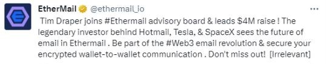
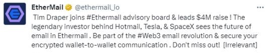

Project Overview
The Sentiment Analysis Virtual Bot (Tweetler) is designed to analyze and understand human emotions and opinions expressed on Twitter using natural language processing (NLP)
and machine learning techniques. The goal is to classify tweets as positive, negative, or neutral based on their sentiment, helping businesses, researchers,
and individuals gain insights into public opinions and trends.
By leveraging real-time sentiment analysis, Tweetler enables companies to track brand reputation, monitor customer feedback, and assess social media engagement effectively.
Additionally, the system is adaptable and scalable, ensuring continuous improvements in accuracy and performance through AI advancements.
Features & Functionality
- Sentiment Classification: Identifies and categorizes tweets as positive, negative, or neutral.
- Real-time Analysis: Monitors Twitter data instantly for sentiment trends.
- Data Processing: Utilizes NLP techniques such as tokenization, stemming, and entity recognition.
- User-friendly Interface: Displays sentiment analysis results clearly.
- Scalability & Accuracy: Continuously improves performance through feedback and advanced AI models.
- Chrome Extension: Extracts tweets from the home page for quick analysis.
- Sarcasm Detection: Advanced capabilities to interpret sarcasm, emojis, and emoticons.
- Machine Learning Model: Uses Support Vector Machine (SVM) for high accuracy predictions.
Project Demonstration
The system is implemented through a combination of Python, Flask, Selenium, and machine learning models. The workflow consists of:
- Data Extraction: A Chrome extension extracts tweets using Selenium.
- Preprocessing: Text data undergoes NLP techniques such as segmentation, tokenization, stop-word removal, stemming, and speech tagging.
- Feature Extraction: Sentiment-relevant features are retrieved for classification.
- Model Training: The SVM algorithm is trained using labeled datasets to ensure accurate sentiment prediction.
- Real-time Sentiment Analysis: Tweets and their replies are analyzed, with results dynamically displayed.
- Output Presentation: Sentiment classification results appear beside tweets for users to understand their context.

 
